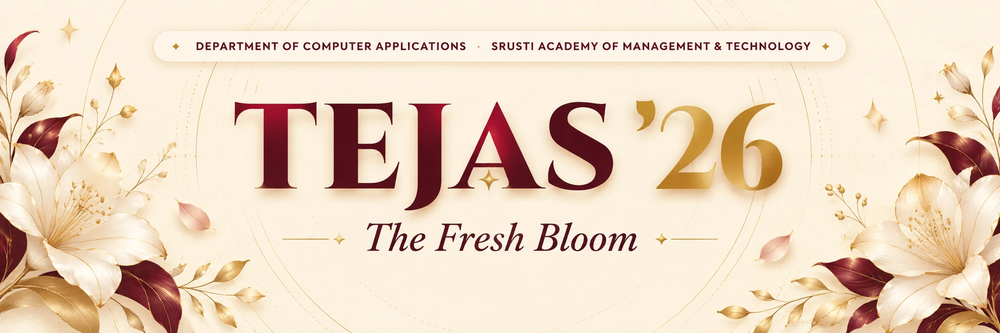

A new chapter begins.
Let it bloom beautifully.
A day to welcome the next generation, honour our esteemed mentors, and celebrate the wonderful journey ahead.
✧ WITH GRATITUDE & ADMIRATION ✧
The hearts behind our journey.
A tribute to the inspiring educators who light the way for every new beginning.
Faculty profiles currently use demo portraits and names. Replace them with your 22 official faculty photos and names in script.js.
An invitation,
written with gratitude.
Every beautiful beginning is made possible by the people who believe in us.
As we open the doors to a fresh chapter, we would be deeply honoured by the presence of our esteemed faculty at TEJAS ’26 — The Fresh Bloom.
Your guidance is the light that helps every student grow. Join us as we welcome our newest MCA family members with warmth, tradition and joy.
You are cordially invited
TEJAS ’26
The Fresh Bloom
With respect and heartfelt gratitude, we invite our cherished faculty to grace the freshers’ celebration with your presence and blessings.
With love & appreciation,
The TEJAS ’26 Organising Team
✧ EVERY MOMENT, A MEMORY
The celebration unfolds.
From cherished traditions to our first hello — here's how our beautiful day begins.
And this is only the beginning...
✦Here's to the stories
we're yet to write.
New friends. New dreams. Endless possibilities.
Together, let's make the fresh bloom unforgettable.